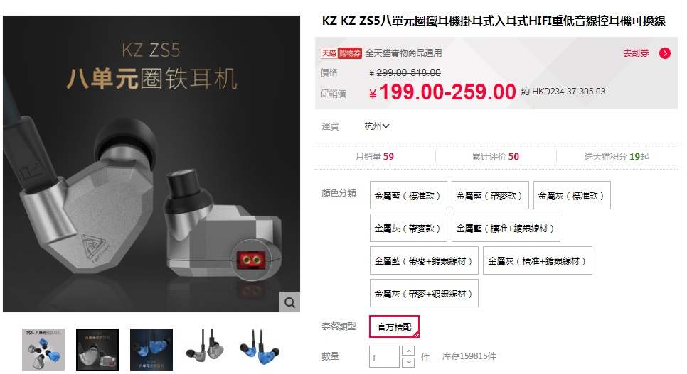

淘寶耳機KZ ZS5 開箱
Release date: 17 Aug 2017
近日連登經常吹捧著一隻性價比極高的淘寶耳機，有巴打更稱它比得上大牌子千元級質素。
正巧小弟服役兩年的ATH-IM50 開始出現斷針問題，正愁換什麼好。


究竟它的實力能否媲美千元大牌呢？


我買的一套還加送升級鍍銀線和膠耳勾。

煲了兩星期後聽感
先此聲明小弟非専業耳機發燒友，以下評論以主觀角度出發。
小弟亦沒有高級的播放器，主要用iphone6 plus 直插直推耳機，並用舊愛ATH-IM50 作比較對象。
先對比一下兩者的實物。
| 項目 | ATH-IM50 | KZ-ZS5 |
|---|---|---|
| 抗阻 | 兩隻耳機都有低抗阻，手機開到≤40%的音量都相當夠聲。 | |
| 單元 | 每邊雙動圈 | 每邊雙動圈+雙動鐵 |
| 舒適度 | IM50出名難戴，耳機的形狀不太貼耳，總是有種想要掉出來的感覺。 | ZS5很明顯參考(抄考)了大廠Campfire 的設計，確實較人性化和舒服。 |
| 質感 | 兩者皆由塑膠制，耳機的接縫口頗明顯，明顯能感覺兩者都是中低檔耳機(只是看不出ZS5比IM50還低檔...) | |
聽感測試：
| 分晰力 | 這個ZS5真的贏了，額外的動鐵單元真的在表現音樂的小細節上有很大的幫助，如背景的沙槌、三角鈴，甚至人聲的一些齒音，ZS5都有能力表現到，而IM50卻做不到。 |
|---|---|
| 分離度 | 兩者都做得一般般，感覺樂器都是被疊在一起，而ZS5三頻比較分離。但兩者有一點都做得好的就是人聲有好好的被分離，鮮明突出。當中要說的話，IM50的人聲要更前些。 |
| 音場 | ZS5感覺好些小。IM50空間感近乎零，而ZS5 則像在小密室裏搞演場會。這個價位的入耳式耳機不能要求更多了。 |
| 低頻 | 這個兩者的質量都很接近，它們的低頻都是回饋快而力，聽鼓聲滿有力，有不會過分到壓抑其他聲部，很適合聽流行音樂。 |
| 中頻 | 正如我所說，IM50的人聲較出，但仔細聽的話，ZS5的人聲更清晰、有質量。男聲比IM50更暖，而女聲更透心(受惠於動鐵單元)。唯一奇怪的是女聲的鐵味有點突出，聽慣動圈的人可能不太喜歡。 |
| 高頻 | ZS5的動鐵單元會令它的高頻更有穿透力，IM50相對平淡。但問題在ZS5在高頻音量高的時會有點失控、刺耳，如電結他高音段。這可能是因為其動鐵單元質量的問題，但我沒其他高檔動鐵去證明。 |
結語
這耳機的性價比是確實很高，基本上完勝500元的IM50，而且做工亦能接受，有中低檔耳機應有的質量。
至於能否與~1000價位的耳機對決，小弟真的不能說。
只能說這貨作為200元的耳機已經物超所值。